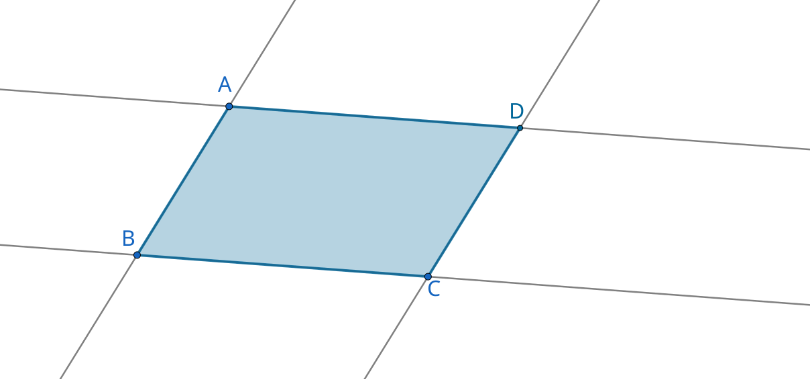
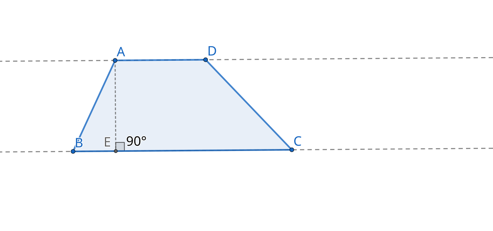
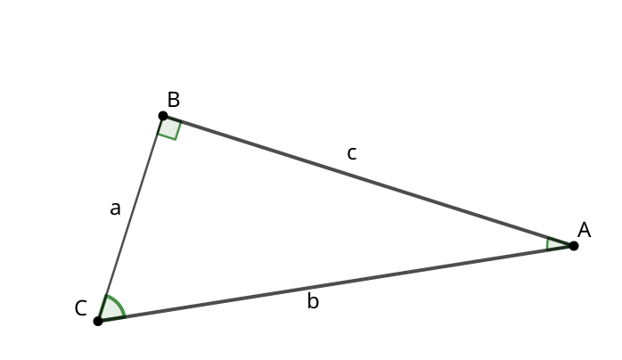
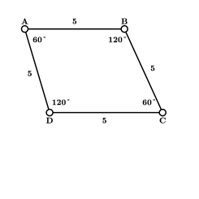
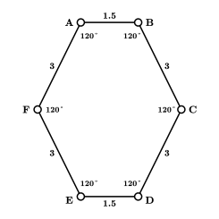
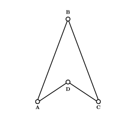
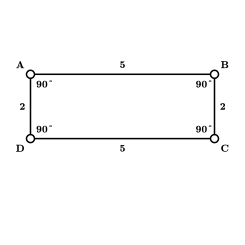
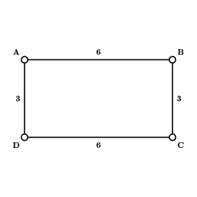

Principle 1.2.1. Additivity of Length.
Suppose that \(C\) is a point on the interior of line segment \(\overline{AB}\text{,}\) then the length of \(\overline{AB}\) equals the sum of the lengths of \(\overline{AC}\) and \(\overline{CB}\text{.}\)







